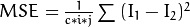

How to write a tutorial for OpenCV¶
Okay, so assume you have just finished a project of yours implementing something based on OpenCV and you want to present/share it with the community. Luckily, OpenCV is an open source project. This means that anyone has access to the full source code and may propose extensions. And a good tutorial is a valuable addition to the library! Please read instructions on the contribution process here: http://opencv.org/contribute.html. You may also find this page helpful: How to contribute.
While making a robust and practical library (like OpenCV) is great, the success of a
library also depends on how user friendly it is. To improve on this aspect, the
OpenCV team has already been listening to user feedback at OpenCV Q&A
forum and by making samples you can find in the source directories
samples folder. The addition of the tutorials (in both online and PDF format)
is an extension of these efforts.
Goal¶
The tutorials are just as an important part of the library as the implementation of those crafty data structures and algorithms you can find in OpenCV. Therefore, the source codes for the tutorials are part of the library. And yes, I meant source codes. The reason for this formulation is that the tutorials are written by using the Sphinx documentation generation system. This is based on the popular Python documentation system called reStructuredText (reST). ReStructuredText is a really neat language that by using a few simple conventions (indentation, directives) and emulating old school email writing techniques (text only) tries to offer a simple way to create and edit documents. Sphinx extends this with some new features and creates the resulting document in both HTML (for web) and PDF (for offline usage) format.
Usually, an OpenCV tutorial has the following parts:
- A source code demonstration of an OpenCV feature:
- One or more CPP, Python, Java or other type of files depending for what OpenCV offers support and for what language you make the tutorial.
- Occasionaly, input resource files required for running your tutorials application.
- A table of content entry (so people may easily find the tutorial):
- Adding your stuff to the tutorials table of content (reST file).
- Add an image file near the TOC entry.
- The content of the tutorial itself:
- The reST text of the tutorial
- Images following the idea that “A picture is worth a thousand words”.
- For more complex demonstrations you may create a video.
As you can see you will need at least some basic knowledge of the reST system in order to complete the task at hand with success. However, don’t worry: reST (and Sphinx) was made with simplicity in mind. It is easy to grasp its basics. I found that the OpenAlea documentations introduction on this subject (or the Thomas Cokelaer one) to be enough for this. If for some directive or feature you need a more in-depth description look it up in the official reStructuredText help files or at the Sphinx documentation.
In our world, achieving some tasks is possible in multiple ways. However, some of the roads to take may have obvious or hidden advantages over others. Then again, in some other cases it may come down to just simple user preference. Here, I’ll present how I decided to write the tutorials, based on my personal experience. If for some of them you know a better solution and you can back it up feel free to use that. I’ve nothing against it, as long as it gets the job done in an elegant fashion.
Now the best option would be to do the integration yourself. For this, you first need to have the source code. I recommend following the guides for your operating system on acquiring OpenCV sources. For Linux users look here and for Windows here. You must also install python and sphinx with its dependencies in order to be able to build the documentation.
Once you have downloaded the repository to your hard drive you can take a look in the OpenCV directory to make sure you have both the samples and doc folder present. Anyone may download the latest source files from git://github.com/opencv/opencv.git. Nevertheless, not everyone has upload (commit/submit) rights. This is to protect the integrity of the library. If you plan doing more than one tutorial, and would like to have an account with commit user rights you should first register an account at http://code.opencv.org/ and then contact OpenCV administrator -delete-admin@-delete-opencv.org. Otherwise, you can just send the resulting files to us at -delete-admin@-delete-opencv.org and we’ll add it.
Format the Source Code¶
Before I start this let it be clear: the main goal is to have a working sample code. However, for your tutorial to be of a top notch quality you should follow a few guidelines I am going to present here. In case you have an application using the older interface (with IplImage, cvMat, cvLoadImage and such) consider migrating it to the new C++ interface. The tutorials are intended to be an up to date help for our users. And as of OpenCV 2, the OpenCV emphasis is on using the less error prone and clearer C++ interface. Therefore, if possible, please convert your code to the C++ interface. For this it may help to read the Interoperability with OpenCV 1 tutorial. However, once you have working OpenCV 2 code, then you should make your source code snippet as easy to read as possible. Here is some advice for this:
Add a standard output with the description of what your program does. Keep it short, but descriptive. This output is at the start of the program. In my example files this usually takes the form of a help function containing the output. This way, both the source file viewer and application runner can see what your sample is all about. Here’s an example of this:
void help() { cout << "--------------------------------------------------------------------------" << endl << "This program shows how to write video files. You can extract the R or G or B color channel " << " of the input video. You can choose to use the source codec (Y) or select a custom one. (N)"<< endl << "Usage:" << endl << "./video-write inputvideoName [ R | G | B] [Y | N]" << endl << "--------------------------------------------------------------------------" << endl << endl; } // ... int main(int argc, char *argv[], char *window_name) { help(); // here comes the actual source code }
Additionally, finalize the description with a short usage guide. This way the user will know how to call your programs, which leads us to the next point.
Prefer command line arguments over hard coded values. If your program has some variables that may be changed, use command line arguments for this. The tutorials can be a simple try-out ground for the user. If you offer command line arguments for the input image (for example), then you offer the possibility for the user to try it out with his/her own images, without the need to mess with the source code. In the above example, you can see that the input image, channel and codec selection may all be changed from the command line. Just compile the program and run it with your own input arguments.
Be as verbose as possible. There is no shame in filling the source code with comments. This way the more advanced user may figure out what’s happening right from the sample code. This advice goes for the output console too. Specify to the user what’s happening. Never leave the user hanging there and thinking “is this program crashing, or just doing some computationally intensive task?.” So, if you do a training task that may take some time, make sure you print out a message about this before starting and after finishing it.
Throw out unnecessary stuff from your source code. This is a warning to not take the previous point too seriously. Balance is the key. If it’s something that can be done in fewer lines or more simply, then that’s the way you should do it. Nevertheless, if you have omitted details, tell the user why you have chosen to do so. Keep the amount of information as low as possible, while still getting the job done in an elegant way.
Put your sample file into the
opencv/samples/cpp/tutorial_code/sectionNamefolder. If you write a tutorial for languages other than cpp, then change that part of the path. Before completing this you need to decide the section (module) your tutorial belongs to. Decide which module your code relies on most heavily, and that is the one to use. If the answer to this question is more than one module then the general section is the one to use. To find the opencv directory, navigate to where you downloaded our repository.If the input resources are hard to acquire for the end user, consider adding a few of them to the
opencv/samples/cpp/tutorial_code/images. Make sure that whoever reads your code can try it out!
Add the TOC entry¶
For this you will need to know some reStructuredText. There is no going around this. reStructuredText files have rst extensions. However, these are simple text files. You can use any text editor you like, but those that offer syntax highlighting for reStructuredText will be most useful.
Adding your tutorial to a table of content is important for multiple reasons. First and foremost this will allow for the user base to find your tutorial from our website. Secondly, if you omit this, Sphinx will throw a warning that your tutorial file isn’t part of any TOC tree entry. And there is nothing more than the developer team hates than an ever increasing warning/error list in their builds. Sphinx also uses this to build the previous/back/up buttons on the website. Finally, omitting this step will mean your tutorial will not be added to the PDF version of the tutorials.
Navigate to the opencv/doc/tutorials/section/table_of_content_section folder (where the section is the module to which you’re adding the tutorial). Open the table_of_content_section file. Now this may have two forms. If no prior tutorials are present in this section, there will be a template containing a message about this, with the following form:
.. _Table-Of-Content-Section:
Section title
-----------------------------------------------------------
Description about the section.
.. include:: ../../definitions/noContent.rst
.. raw:: latex
\pagebreak
The first line is a reference to the section title in the reST system. The section title will be a link and you may refer to it via the :ref: directive. The include directive imports the template text from the definition directory’s noContent.rst file. Sphinx does not create the PDF from scratch. It does this by first creating a LaTeX file, then creating the PDF from the LaTeX file. With the raw directive, you can directly add to an output file. Its unique argument tells Sphinx which output type to add the content of the directive to. For the PDFs it may happen that multiple sections will overlap on a single page. To avoid this at the end of the TOC we add a pagebreak latex command, that hints to the LaTeX system that the next line should be on a new page.
If you have one of these, change it to match the following form:
.. _Table-Of-Content-Section:
Section title
-----------------------------------------------------------
.. include:: ../../definitions/tocDefinitions.rst
+
.. tabularcolumns:: m{100pt} m{300pt}
.. cssclass:: toctableopencv
=============== ======================================================
|MatBasicIma| **Title:** :ref:`matTheBasicImageContainer`
*Compatibility:* > OpenCV 2.0
*Author:* |Author_BernatG|
You will learn how to store images in the memory and how to print out their content to the console.
=============== =====================================================
.. |MatBasicIma| image:: images/matTheBasicImageStructure.jpg
:height: 90pt
:width: 90pt
.. raw:: latex
\pagebreak
.. toctree::
:hidden:
../mat - the basic image container/mat - the basic image container
If this is already present, just add a new section of the content between the include and the raw directives (excluding those lines). Here you’ll see a new include directive. This should be present only once in a TOC tree, and the reST file contains the definitions of all the authors contributing to the OpenCV tutorials. We are a multicultural community and some of our name may contain some funky characters. However, reST only supports ANSI characters. Luckily we can specify Unicode characters with the unicode directive. Doing this for all of your tutorials is a troublesome procedure. Therefore, the tocDefinitions file contains the definition of your author name. Add it here once and afterwards just use the replace construction. For example, here’s the definition for my name:
.. |Author_BernatG| unicode:: Bern U+00E1 t U+0020 G U+00E1 bor
The |Author_BernatG| is the text definition’s alias. I can use this later to add the definition, like I’ve done in the TOCs Author part. After the :: and a space, you start the definition. If you want to add an UNICODE character (non-ASCII) leave an empty space and specify it in the format U+(UNICODE code). To find the UNICODE code of a character I recommend using the FileFormat website’s service. Spaces are trimmed from the definition, therefore we add a space by its UNICODE character (U+0020).
Everything until the raw directive is part of a TOC tree entry. Here’s what a TOC entry will look like:
.. tabularcolumns:: m{100pt} m{300pt}
.. cssclass:: toctableopencv
=============== ======================================================
|MatBasicIma| **Title:** :ref:`matTheBasicImageContainer`
*Compatibility:* > OpenCV 2.0
*Author:* |Author_BernatG|
You will learn how to store images in the memory and how to print out their content to the console.
=============== ======================================================
.. |MatBasicIma| image:: images/matTheBasicImageStructure.jpg
:height: 90pt
:width: 90pt
As you can see, we have an image to the left and a description box to the right. To create two boxes, we use a table with two columns and a single row. In the left column is the image and in the right one the description. However, the image directive is way too long to fit in a column. Therefore, we need to use the substitution definition system. We add this definition after the TOC tree. All images for the TOC tree are to be put in the images folder near its reStructuredText file. We use the point measurement system because we are also creating PDFs. PDFs are printable documents, where there is no such thing as pixels (px), just points (pt). And while generally space is no problem for web pages (we have monitors with huge resolutions) the size of the paper (A4 or letter) is constant and will be for a long time in the future. Therefore, size constraints come into play more with the PDF than the generated HTML code.
Now your images should be as small as possible, while still conveying the intended information to the user. Remember that the tutorial will become part of the OpenCV source code. If you add large images (hence large image sizes) it will just increase the size of the repository pointlessly. If someone wants to download it later, its download time will be that much longer. Not to mention the larger PDF size for the tutorials and the longer load time for the web pages. In terms of pixels a TOC image should not be larger than 120 X 120 pixels. Resize your images if they are larger!
Note
If you add a larger image and specify a smaller image size, Sphinx will not resize that. At build time it will add the full size image and the resize will be done by your browser after the image is loaded. A 120 X 120 image is somewhere below 10KB. If you add a 110KB image, you have just pointlessly added a 100KB extra data to transfer over the internet for every user!
Generally speaking you shouldn’t need to specify your images size (excluding the TOC entries). If not specified, Sphinx will use the size of the image itself (so no resize occurs). Then again, if for some reason you decide to specify a size, that should be the width of the image rather than its height. The reason for this again goes back to the PDFs. On a PDF page the height is larger than the width. In the PDF the images will not be resized. If you specify a size that does not fit in the page, then what does not fit in will be cut off. When creating images for your tutorial you should try to keep the image widths below 500 pixels, and calculate with around 400 point page width when specifying image widths.
The image format depends on the content of the image. If you have a complex scene (many random like colors) then use jpg. Otherwise, prefer using png. There are even some tools out there that optimize the size of PNG images, such as PNGGauntlet. Use them to make your images as small as possible in size. Now on the right side column of the table we add the information about the tutorial:
The first line is the title of the tutorial. However, there is no need to specify it explicitly, since we can use the reference system. Sphinx will replace a
:ref:`matTheBasicImageContainer`directive with a link using the title of thematTheBasicImageContainersection, which is defined in the tutorial. Here’s how the definition looks in my case:.. _matTheBasicImageContainer: Mat - The Basic Image Container *******************************
Note, that according to the reStructuredText rules the * should be as long as your title.
Compatibility. Which version of OpenCV is required to run your sample code.
Author. Use the substitution markup of reStructuredText.
A short sentence describing the essence of your tutorial.
Now before each TOC entry you need to add three lines:
+
.. tabularcolumns:: m{100pt} m{300pt}
.. cssclass:: toctableopencv
The plus sign (+) is to enumerate tutorials by using bullet points. So for every TOC entry we have a corresponding bullet point represented by the +. Sphinx is highly sensitive to indentation. This is used to express from which point until to which point does a construction last. Un-indentation means end of that construction. So to keep all the bullet points belonging to the same group the following TOC entry (until the next +) should be indented by two spaces.
Here, I should also mention to always prefer using spaces instead of tabs. Working with only spaces means that if we both use monotype fonts we will see the same thing. Tab size is text editor dependent and so should be avoided. Sphinx translates all tabs into 8 spaces before interpreting it.
It turns out that the automatic formatting of both the HTML and PDF (LaTeX) system messes up our tables. Therefore, we need to help them out a little. For the PDF generation we add the .. tabularcolumns:: m{100pt} m{300pt} directive. This means that the first column should be 100 points wide and middle aligned. For the HTML look we simply give the table a toctableopencv class. Then, we can modify the look of the table by modifying the CSS of our web page. The CSS definitions go into the opencv/doc/_themes/blue/static/default.css_t file.
.toctableopencv
{
width: 100% ;
table-layout: fixed;
}
.toctableopencv colgroup col:first-child
{
width: 100pt !important;
max-width: 100pt !important;
min-width: 100pt !important;
}
.toctableopencv colgroup col:nth-child(2)
{
width: 100% !important;
}
However, you should not need to modify this. Just add these three lines (plus keep the two space indentation) for all TOC entries you add. At the end of the TOC file you’ll find:
.. raw:: latex
\pagebreak
.. toctree::
:hidden:
../mat - the basic image container/mat - the basic image container
The page break entry is for separating sections and there should be only one in a TOC tree reStructuredText file. Finally, at the end of the TOC tree we need to add our tutorial to the Sphinx TOC tree system. Sphinx will use this to generate the previous/next/up information for the HTML file and add items to the PDF according to the order here. By default this TOC tree directive generates a simple table of contents. However, we already created a fancy looking one so we no longer need this basic one. Therefore, we add the hidden option to do not show it.
The path is of a relative type. We step back in the file system and then go into the mat - the basic image container directory for the mat - the basic image container.rst file. Including the rst extension for the file is optional.
Write the tutorial¶
Create a folder with the name of your tutorial. Preferably, use small letters only. Then create a text file in this folder with the rst extension and the same name. If you have images for the tutorial create an images folder and add your images there. When creating your images follow the guidelines described in the previous part!
Now here’s our recommendation for the structure of the tutorial (although, remember that this is not carved in stone; if you have a better idea, use it!):
Create the reference point and the title.
.. _matTheBasicImageContainer: Mat - The Basic Image Container *******************************
You start the tutorial by specifying a reference point by the
.. _matTheBasicImageContainer:and then its title. The name of the reference point should be a unique one over the whole documentation. Therefore, do not use general names like tutorial1. Use the * character to underline the title for its full width. The subtitles of the tutorial should be underlined with = charachter.Goals. You start your tutorial by specifying what you will present. You can also enumerate the sub jobs to be done. For this you can use a bullet point construction. There is a single configuration file for both the reference manual and the tutorial documentation. In the reference manuals, we do not want any kind of bullet point style enumeration for the argument lists. Therefore, by default all the bullet points at this level are set to do not show the dot before the entries in the HTML. You can override this by putting the bullet point in a container. I’ve defined a square type bullet point view under the name enumeratevisibleitemswithsquare. The CSS style definition for this is again in the
opencvdoc_themesbluestaticdefault.css_tfile. Here’s a quick example of using it:.. container:: enumeratevisibleitemswithsquare + Create the reference point and the title. + Second entry + Third entry
Note that you need to keep the indentation of the container directive. Directive indentations are always three (3) spaces. Here you may even give usage tips for your sample code.
Source code. Present your samples code to the user. It’s a good idea to offer a quick download link for the HTML page by using the download directive and pointing out where the user may find your source code in the file system by using the file directive:
Text :file:`samples/cpp/tutorial_code/highgui/video-write/` folder of the OpenCV source library or :download:`text to appear in the webpage <../../../../samples/cpp/tutorial_code/HighGUI/video-write/video-write.cpp>`.
For the download link the path is a relative one, hence the multiple back stepping operations (..). Then you can add the source code either by using the code block directive or the literal include one. In case of the code block you will need to actually add all the source code text into your reStructuredText text and also apply the required indentation:
.. code-block:: cpp int i = 0; l = ++j;
The only argument of the directive is the language used (here CPP). Then you add the source code into its content (meaning one empty line after the directive) by keeping the indentation of the directive (3 spaces). With the literal include directive you do not need to add the source code of the sample. You just specify the sample and Sphinx will load it for you, during build time. Here’s an example usage:
.. literalinclude:: ../../../../samples/cpp/tutorial_code/HighGUI/video-write/video-write.cpp :language: cpp :linenos: :tab-width: 4 :lines: 1-8, 21-22, 24-
After the directive you specify a relative path to the file from the directory containing the tutorial file. It has four options: the language to use, if you add the
:linenos:the line numbers will be shown, you can specify the tab size with the:tab-width:and you do not need to load the whole file, you can show just the important lines. Use the lines option to hide redundant information (such as the help function). Here basically you specify ranges; if the second range line number is missing, then that means the range continues until the end of the file. The ranges specified here do no need to be in an ascending order: you may reorganize the structure of your sample inside the tutorial.The tutorial. Well here is where you put the explanation for what you have you used and why. Try to be short, clear, concise and yet thorough. There’s no magic formula. Look into a few already made tutorials and start out from there. Try to mix sample OpenCV code with your explanations. If it’s hard to describe something with words, don’t hesitate to add in a reasonable size image to overcome this issue. When you present OpenCV functionality it’s a good idea to give a link to the OpenCV data structure or function used. Because the OpenCV tutorials and reference manual are in separate PDF files it is not possible to make this link work for the PDF format. Therefore, we only use web page links to the http://docs.opencv.org website here. The OpenCV functions and data structures may be used for multiple tasks. Nevertheless, we want to avoid every user creating their own reference to a commonly used function. So for this we use the global link collection of Sphinx. This is defined in the file:opencv/doc/conf.py configuration file. Open it and go all the way down to the last entry:
# ---- External links for tutorials ----------------- extlinks = { 'hgvideo' : ('http://docs.opencv.org/modules/highgui/doc/reading_and_writing_images_and_video.html#%s', None) }
In short, here we defined a new hgvideo directive that refers to an external webpage link. Its usage is:
A sample function of the highgui modules image write and read page is the :hgvideo:`imread() function <imread>`.
Which turns into:
A sample function of the highgui modules image write and read page is the imread() function.
The argument you give between the <> will be put in place of the
%sin the above definition, allowing the link will anchor to the correct function. To find out the anchor of a given function just open up a web page, search for the function and click on it. In the address bar it should appear like:http://docs.opencv.org/modules/highgui/doc/reading_and_writing_images_and_video.html#imread. Look here for the name of the directives for each page of the OpenCV reference manual. If none are present for one of them feel free to add one for it. For formulas, you can add LaTeX code that will translate in the web pages into images. You do this by using the math directive. A usage tip:.. math:: MSE = \frac{1}{c*i*j} \sum{(I_1-I_2)^2}
That after build turns into:

You can even use it inline, for example:
:math:` MSE = \frac{1}{c*i*j} \sum{(I_1-I_2)^2}`which turns into . If you require some crazy LaTeX library extension you need to add those to the ones to use at build time. Look into the file:opencv/doc/conf.py configuration file for more information on this.Results. Well, depending on your program. you can show one of more of the following here:
Console outputs, by using the code block directive.
Output images.
Runtime videos, visualization. For this use your favorite screens capture software. Camtasia Studio certainly is one of the better choices, however their prices are out of this world. CamStudio is a free alternative, but less powerful. If you do a video, you can upload it to YouTube and then use the raw directive with HTML option to embed it into the generated web page:
You may observe a runtime instance of this on the `YouTube here <https://www.youtube.com/watch?v=jpBwHxsl1_0>`_. .. raw:: html <div align="center"> <iframe title="Creating a video with OpenCV" width="560" height="349" src="https://www.youtube.com/embed/jpBwHxsl1_0?rel=0&loop=1" frameborder="0" allowfullscreen align="middle"></iframe> </div>
This results in the text and video: You may observe a runtime instance of this on the YouTube here.
When these aren’t self-explanatory make sure to throw in a few guiding lines about what and why we can see.
Build the documentation and check for errors or warnings. In the CMake make sure you check or pass the option for building documentation. Then simply build the docs project for the PDF file and the docs_html project for the web page. Read the output of the build and check for errors/warnings for what you have added. This is also the time to observe and correct any kind of not so good looking parts. Remember to keep our build logs clean.
Read your tutorial again and check for both programming and spelling errors. If you found any, please correct them.
Take home the pride and joy of a job well done!¶
Once you are done please make a GitHub pull request with the tutorial. Now, to see
your work live you may need to wait some time. The PDFs are usually updated at
the launch of a new OpenCV version. The web pages are a little more diverse. They are
automatically rebuilt nightly. Currently we use 2.4 and master branches for
daily builds. So, if your pull request was merged to any of these branches, your
material will be published at docs.opencv.org/2.4 or
docs.opencv.org/master correspondingly. Everything
that was added to 2.4 is merged to master branch every week. Although we try
to make a build every night, occasionally we might freeze any of the branches to fix
upcoming issues. During this it may take a little longer to see your work online,
however if you submitted it, be sure that eventually it will show up.
If you have any questions or advices relating to this tutorial you can contact us at -delete-admin@-delete-opencv.org (delete the -delete- parts of that email address).
Help and Feedback
You did not find what you were looking for?- Ask a question on the Q&A forum.
- If you think something is missing or wrong in the documentation, please file a bug report.